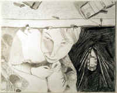

Sandy Rankin
Viewing Room
When no one was looking
she touched the hands
folded across the belly,
her grandfather lying there
in the open coffin.
Her mother and her aunt
spoke about the flowers, Oh,
those are beautiful!ó
leaning near each spray
to examine the names
of the senders on the little cards.
She thought how beautiful
her grandfather looked,
so much more so
than when she had seen him last,
chin on his chest,
drool gathering in sticky pools
in the wrinkles of his pajamas,
his yellow-slitted eyes
dying or dead already.
Now his blushed cheekbones
arched higher than she remembered,
shadowed hollows beneath them.
His thin lips stretched into a clean
straight line, his eyelids closed,
tender as two petals.
She wanted to skip
into the sunlight outside
because she was ten,
because she loved her father
who had begun to cry,
because he did not turn away,
he let her see.
|

(Caleb Everly) |
 ‚Üê Back to MarckBeggs.com | Arkansas Literary Forum archive, preserved as originally published
‚Üê Back to MarckBeggs.com | Arkansas Literary Forum archive, preserved as originally published{kind=link}